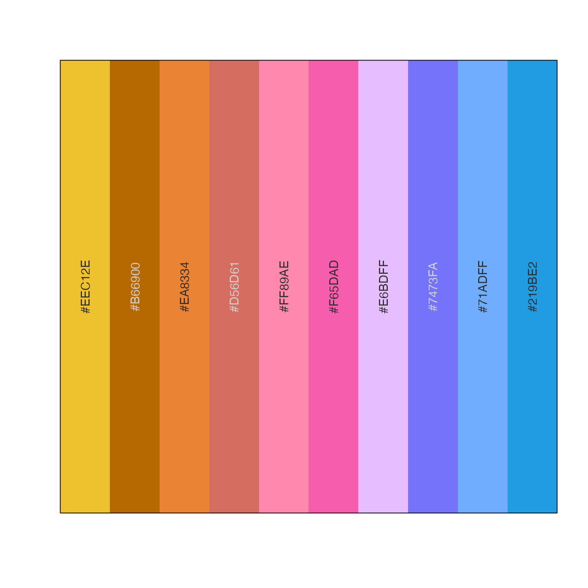
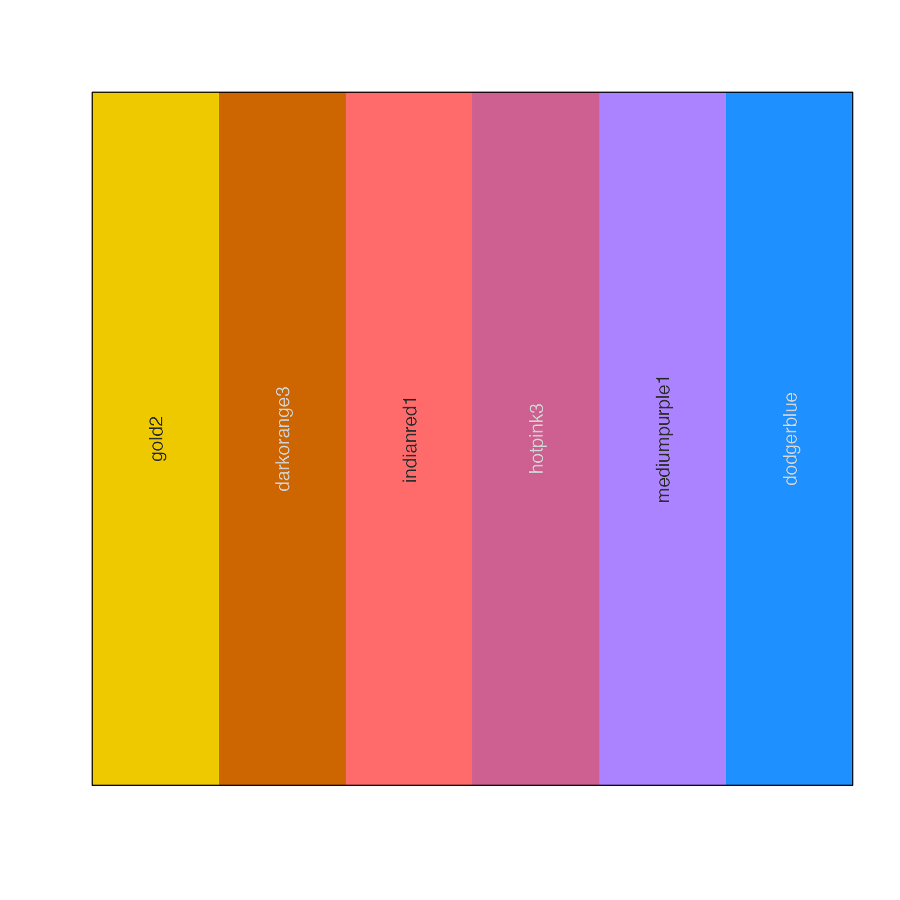
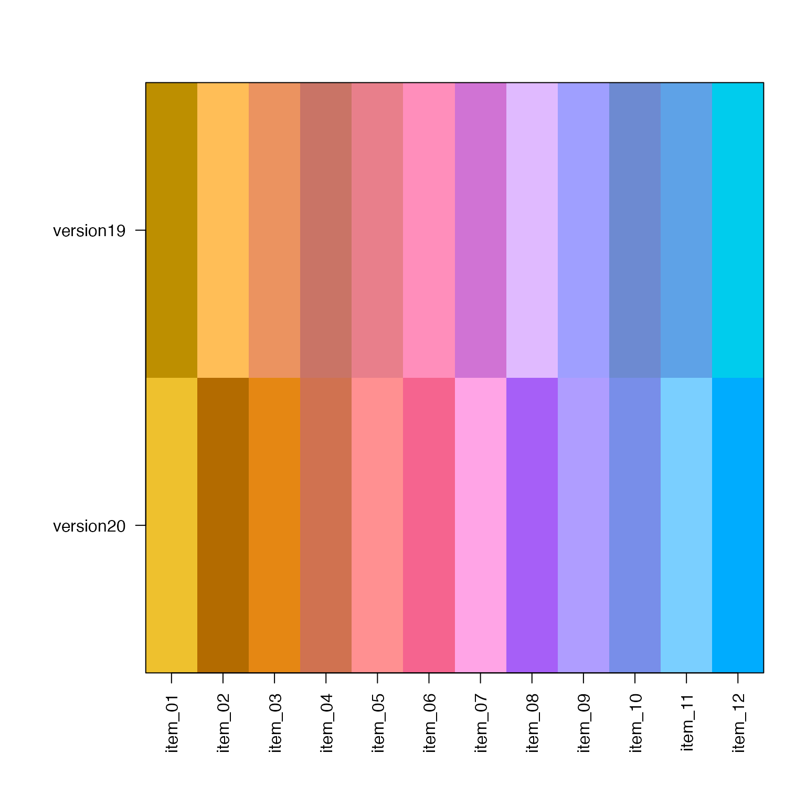
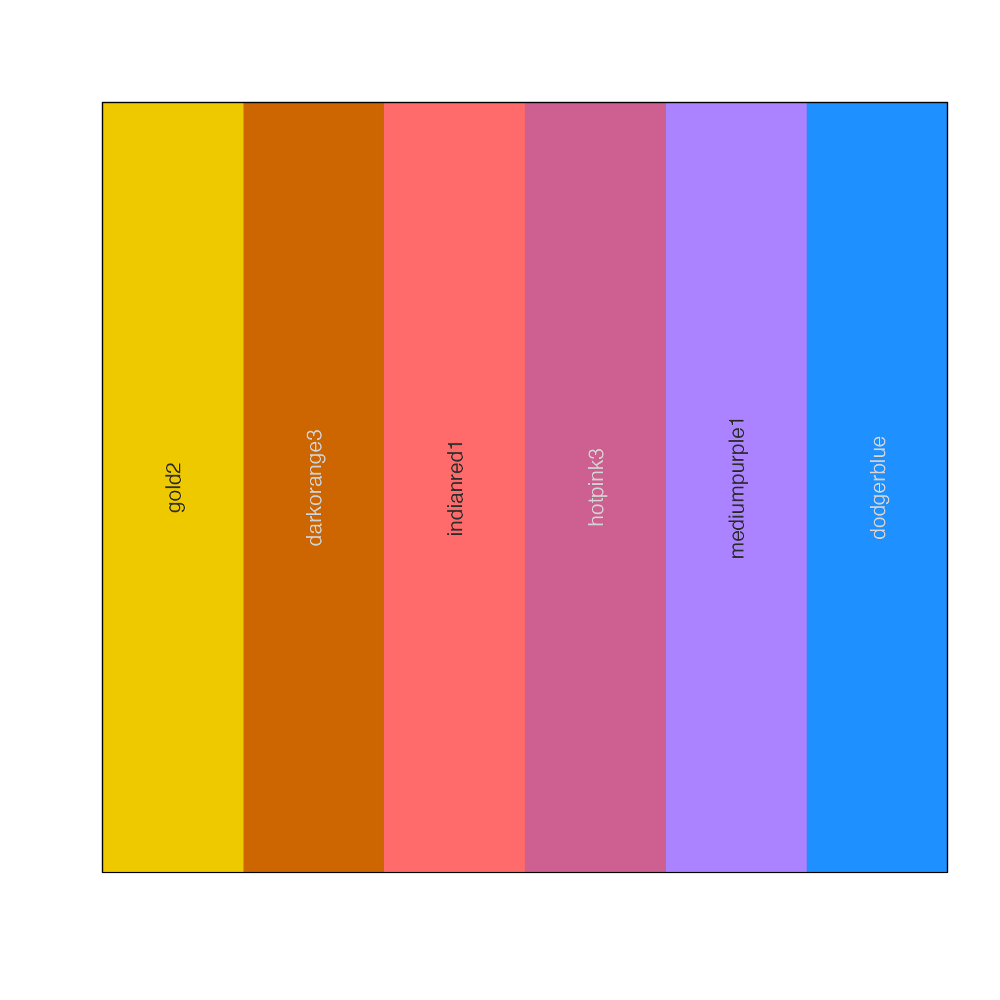
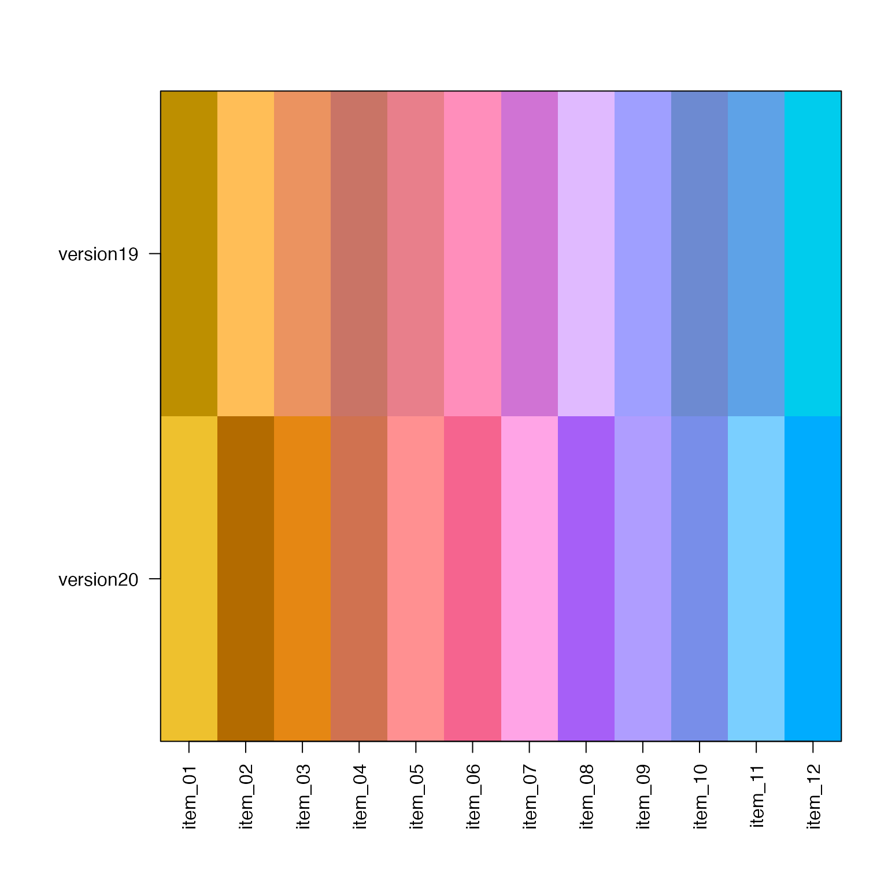

rainbow categorical colors using varied luminance and chroma
Source:R/colorjam-rainbowjam.R
rainbowJam.Rdrainbow categorical colors using varied luminance and chroma
Usage
rainbowJam(
n = NULL,
preset = getOption("colorjam.preset", "dichromat2"),
step = getOption("colorjam.step", "default"),
Hstart = 0,
alpha = 1,
hues = NULL,
Crange = NULL,
Lrange = NULL,
phase = 1,
direction = c("1", "-1"),
do_hue_pad = FALSE,
hue_pad_percent = 0,
nameStyle = c("none", "n", "closest_named_color", "closestRcolor", "hcl", "color"),
min_requested_n = 3,
test_color_model = c("HCL", "HSL"),
doTest = FALSE,
verbose = FALSE,
...
)Arguments
- n
integernumber of categorical colors to return- preset
characterstring matching one entry incolorjam_presets(), which defines the color wheel to use. define the color wheel, only used whenwarpHue=TRUE.- step
characterstring matching one entry incolorjam_steps(), which defines the sequence of Chroma and Luminance values across the range of color hues.- Hstart
numerichue to use for the first hue value in the color sequence. This value represents the first color in the color wheel defined bypreset, and colors are arrayed across 360 degrees.- alpha
numericalpha transparency of colors, values ranging from 0 to 1. If multiple values are supplied, they are applied in order to the categorical colors returned.- hues
numericoptional vector with specific hues to use instead of usingHstartand filling the 360 degree color wheel with colors.- Crange, Lrange
numericoptional permitted ranges for Chroma and Luminance values. These adjustments may be useful to impose a darker or lighter set of categorical colors.When any Chroma value is outside the given
Crange, all color Chroma values are scaled to fit this range usingjamba::normScale(). This process scales the lowest observed Chroma to the minimum Crange, and the highest observed Chroma to the maximum Crange, in order to preserve intermediate gradient values.When any Luminance value is outside the given
Lrange, all color Luminance values are scaled to fit this range usingjamba::normScale().
- phase
integerstarting step value to use from the sequence of Chroma and Luminance values defined bycolorjam_steps().Default
phase=1begins with the first value;phase=2begins with the second value.When
phaseis negative, the Chroma and Luminance values are each reversed, then the absolute value ofphaseis used. For examplephase=-1reverses the sequence, then uses the first value. So it would begin with the last Chroma value, and the last Luminance value.
- direction
charactervalue indicating the direction to travel around the color wheel, permitting the color wheel to be reversed. When usingdirection="-1"it may also be helpful to use a negativephase=-1."1"(default) travels forward, clockwise around the color wheel"-1"travels in reverse, counter-clockwise around the color wheel
- do_hue_pad
logicalindicating whether to apply padding to the end of the color hue sequence. This padding increases distinction between the first and last colors.- hue_pad_percent
numericvalue between 0 and 100, used whendo_hue_pad=TRUEto apply a padding between the first and last color hues.- nameStyle
characterstring for the style of name assigned:"none"assigns no names"n"assigns names in numerical order"closest_named_color"assigns the closest matching color fromnamed_colors, callingclosest_named_color()using...for additional arguments."closestRcolor"assigns names fromclosestRcolors(), using...for additional arguments."hcl"assigns names using H, C, L values"color"assigns names by hex color
- min_requested_n
numericexperimental value which defines the minimum internal color hues to use whennis low. Typically this argument restricts the first several color hues to prevent unusual colors.- test_color_model
logicaldefault FALSE, enables a test mode which enables HSL color space. The method uses an adjustment that takes an average of the HCL chroma/luminance converted to HSL saturation/lightness, then averages with the Cvals,Lvals originally used for HCL. The effect is a somewhat muted version of HSL which otherwise would be too neon saturated. The output is closer to HSL, with generally more vibrant colors than the HCL equivalent, because certain color hues tend to become more saturated based upon the range of opportunity for each color hue. HCL does not account for the available chroma for a hue, it simply caps the chroma.- doTest
logicalindicating whether to perform a visual test fornnumber of colors produced.- verbose
logicalwhether to print verbose output- ...
additional arguments are passed to
closest_named_color()whennameStyle="closest_named_color"closestRcolor()whennameStyle="closestRcolor"jamba::makeNames()whennameStyleis anything except"none".
Details
This function customizes similar functions grDevices::rainbow,
colorspace::rainbow_hcl(), and scales::hue_pal() in two main
ways:
It uses the warped color wheel (see
h2hw()which compresses the green component of the standard HCL color hue wheel, extending the yellow.It uses a varying luminance and chroma vector which was selected to optimize visual distinctiveness of adjacent colors. There is still a limit to the maximum number of effectively different categorical colors, however this function appears to improve other available methods.
This function is also intended to enable use of a custom color wheel,
for example a set of color mappings could define color-blind friendly
ranges of colors when using the warped hue functions h2hw() and
hw2h(). When warpHue=TRUE the values for h1 and
h2 are used to define a mapping from warped hues to standard
hues recognized by hcl().
See also
Other colorjam core:
blend_colors(),
closestRcolor(),
color_complement(),
colors_to_df(),
group2colors(),
sort_colors(),
subset_colors()
Examples
rainbowJam(12);
#> [1] "#EEC12E" "#B36B00" "#E58713" "#D07250" "#FF9091" "#F5648F" "#FFA4E6"
#> [8] "#A65FF7" "#AF9DFF" "#788EE9" "#7ACFFF" "#00ACFE"
#> attr(,"preset")
#> [1] "dichromat2"
# show colors
jamba::showColors(rainbowJam(10));

# show colors
color_pie(rainbowJam(10));
 # be fancy and label colors using the closest R named color
jamba::showColors(rainbowJam(6, nameStyle="closestRcolor"));
# be fancy and label colors using the closest R named color
jamba::showColors(rainbowJam(6, nameStyle="closestRcolor"));
 # or use the closest R color itself
jamba::showColors(names(rainbowJam(6, nameStyle="closestRcolor")));

# be fancy and label colors using the closest named_color
jamba::showColors(rainbowJam(6, nameStyle="closest_named_color"));
# be even fancier and use the nearest named color by its name
jamba::showColors(named_colors[names(rainbowJam(6, nameStyle="closest_named_color"))]);
# comparison of version 0.0.19.900 and update with version 0.0.20.900
cat19 <- rainbowJam_v1(n=12)
cat20 <- rainbowJam(n=12)
jamba::showColors(list(version19=cat19, version20=cat20))

# or use the closest R color itself
jamba::showColors(names(rainbowJam(6, nameStyle="closestRcolor")));

# be fancy and label colors using the closest named_color
jamba::showColors(rainbowJam(6, nameStyle="closest_named_color"));
# be even fancier and use the nearest named color by its name
jamba::showColors(named_colors[names(rainbowJam(6, nameStyle="closest_named_color"))]);
# comparison of version 0.0.19.900 and update with version 0.0.20.900
cat19 <- rainbowJam_v1(n=12)
cat20 <- rainbowJam(n=12)
jamba::showColors(list(version19=cat19, version20=cat20))
